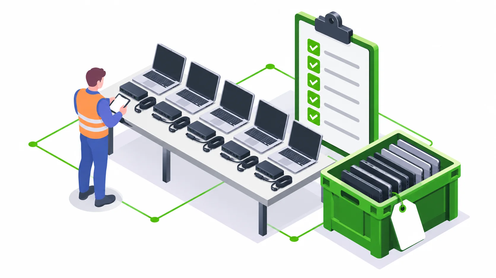

e2e helps IT departments and facilities teams dispose of retired office equipment through assessment, collection, data sanitization and recycling. We are a KSPCB-registered recycler with Pan-India collection and logistics.
One plan for an office refresh or clearance
Old computers often accumulate across storage rooms, branch offices and IT support desks. Start with an asset list and an owner for release approval. We help scope a one-time clearance or recurring collection program around the mix of equipment, data exposure and site constraints.
| Equipment | Before handover |
|---|---|
| Company laptops and desktops | Record asset tags and storage devices; approve erasure or destruction. |
| Engineering workstations | Identify every installed drive and decide which components are retained. |
| Monitors and displays | Record quantity, condition and packing needs; flag damaged screens. |
| Servers and network equipment | Confirm decommissioning, embedded storage and configuration handling. |
| Office electronics and accessories | List printers, cables and peripherals separately; identify items with internal storage. |
Collection, logistics and reporting
Share pickup addresses, floor access, loading restrictions, contact persons and approximate quantities. We confirm the collection scope and schedule before dispatch. Multi-office jobs should use one inventory format with a separate site code for each location.
At handover, reconcile the equipment released with the agreed collection record. Decide which data-bearing devices remain onsite pending security approval. Arrange the required recycling and data-handling records as part of the service scope.
Data protection comes before disposal
Do not treat an operating-system reset or a removed user account as proof of sanitization. Agree a storage-specific erasure workflow or physical destruction route for each data-bearing asset. Keep backups and release approvals with your internal IT team.
Our corporate data erasure service can be scoped separately for equipment that will be reused or returned.
Vendor checks for procurement teams
Ask for current registration documents, their scope and validity, the processing route, a sample collection record and the agreed reporting package. State your company requirements in the purchase order. Registration evidence and project records should be reviewed together.
Use the CPCB e-waste management portal to review current official information. e2e’s stated registration is with KSPCB; request documents for your vendor review rather than assuming any additional certification.
Prepare a useful quote request
- Count laptops, desktops, monitors, servers and accessories separately.
- Identify storage media, preferred sanitization and any onsite-only restrictions.
- List all cities and collection sites, with target windows and site access.
- Specify records needed by IT, finance, procurement and facilities.
Create your corporate disposal brief and attach your inventory to the email. Pricing depends on scope, condition, location, logistics and data-handling work.
Questions from corporate IT teams
Do you collect old company laptops and monitors?
Yes. e2e scopes corporate collections for laptops, desktops, monitors, workstations, servers and office electronics. Share quantities, locations, data requirements and access details.
Is collection available across India?
e2e provides Pan-India collection and logistics. Each site, asset mix and pickup window is confirmed during assessment.
Do you offer free pickup or a fixed scrap price?
Collection fees and any recoverable asset value depend on equipment, volume, condition, location and data work. Request a scoped quotation rather than assuming free pickup or a fixed value.
Related services and planning guides
Data erasure and sanitization services for corporate IT teams
Data erasure and sanitization for corporate laptops, HDDs, SSDs and servers. Blancco, TruWipe and BitRaser workflows, reporting and Pan-India collection.
Read details ServiceServer recycling, storage retirement and workstation disposal
Plan corporate server recycling, workstation disposal and storage media sanitization. e2e coordinates assessment, collection and recycling across India.
Read details
ArticleCorporate laptop disposal checklist for IT and procurement
A practical company laptop retirement checklist: approvals, asset inventory, backups, data wiping, collection records and recycling handover.
Read details CollectionPan-India corporate e-waste collection and data erasure coverage
Pan-India corporate e-waste collection and data erasure enquiries: Bengaluru, Chennai, Hyderabad, Mumbai, Pune, Delhi NCR, Kolkata, Ahmedabad and more.
Read details